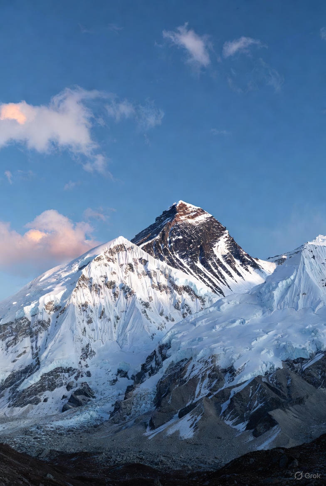
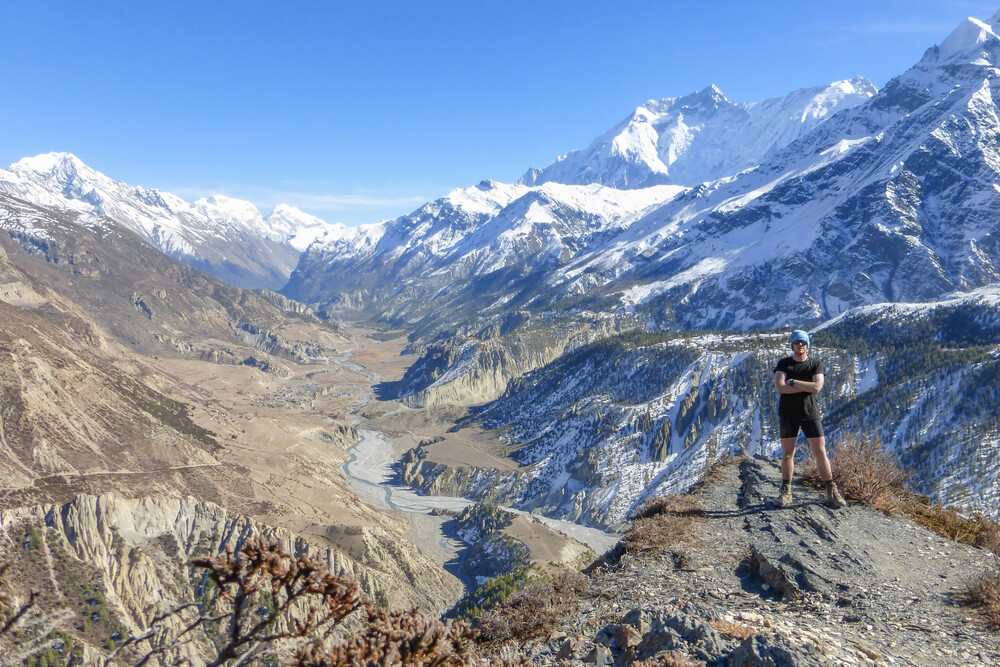

Choose Your Next Adventure
We offer carefully crafted trekking routes for all experience levels.

Everest Base Camp Trek
Duration: 14 days | Difficulty: Challenging
Walk in the footsteps of legends and stand beneath the world's highest peak.
From $2,499

Inca Trail to Machu Picchu
Duration: 4 days | Difficulty: Moderate
The classic Andean adventure ending at the Lost City of the Incas.
From $1,299

Annapurna Circuit
Duration: 18 days | Difficulty: Strenuous
Cross the Thorong La Pass (5,416 m) on one of the world’s greatest treks.
From $2,199